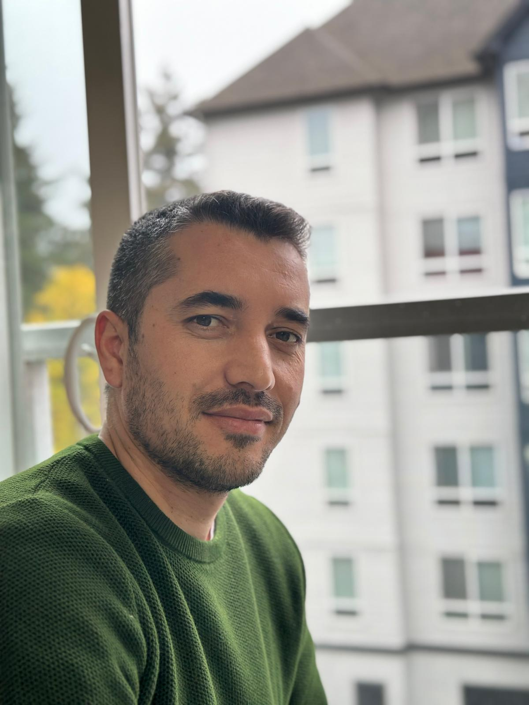

PROFESSIONAL SUMMARY
• Over 5 years of experience as a Quality Assurance Manual and Automation Testing.
• Performed testing of web-based applications, including all three layers of testing Front-end,
Database and API, using both manual and automation methods in the Real Estate domains.
• Proficient in Back-end API Testing using Postman.
• Testing capabilites encompass Functional Testing, Regression Testing, End-to-End Testing, and UI
Testing.
• Possess strong creative and analytical skills, aXention to detail, and excellent problem-solving,
communication, and interpersonal abilites, enabling me to thrive in Agile team environments.
Technical Skills
- Languages: JavaScript, SQL
- Repository System: Git, Github
- Testing Tools: Postman, Swagger, JSON
- Operation System and IDEs: Mac OS, DBeaver, Terminal
- Bug Tracking Tool: Jira Xray, Qase.IO, Testrail
- Test Approaches: Agile/Scrum, Waterfall
PROFESSIONAL EXPERIENCE
Quality Assurance Manual and Automation Testing
Delek Homes | Los Angeles, CA
- • Database testing, and Positive/Negative Testing
- SQL for backend tes1ng and employed tools such as Postman, Swagger, and JSON for effective API
testing
- Managed bug tracking and documentation using Jira, Qase.IO, Confluence, and Testrail
- Tested real estate websites and applications to make sure they worked well and were user-friendly
- worked with developers to find and fix problems, improving the overall user experience.
- Demonstrated good management skills while using Jira as a project management and bug-tracking
- tool.
- Proficient in utilizing GitHub as a source version control tool, enabling efficient and effective ma-
- nagement of project source code, and enabling collaborative sofware development.
- While working within Agile/Scrum methodologies
- Demonstrated strong knowledge of Sofware Development Life Cycle (SDLC), Sofware Testing
- (STLC), and Defect Life Cycle ensuring all processes were followed correctly.
Education
Tajik International University Of Foreign Languages Named Afer Sotim Ulughzoda
(Bachelor of Art) 2006 - 2010 Dushanbe City, Tajikistan